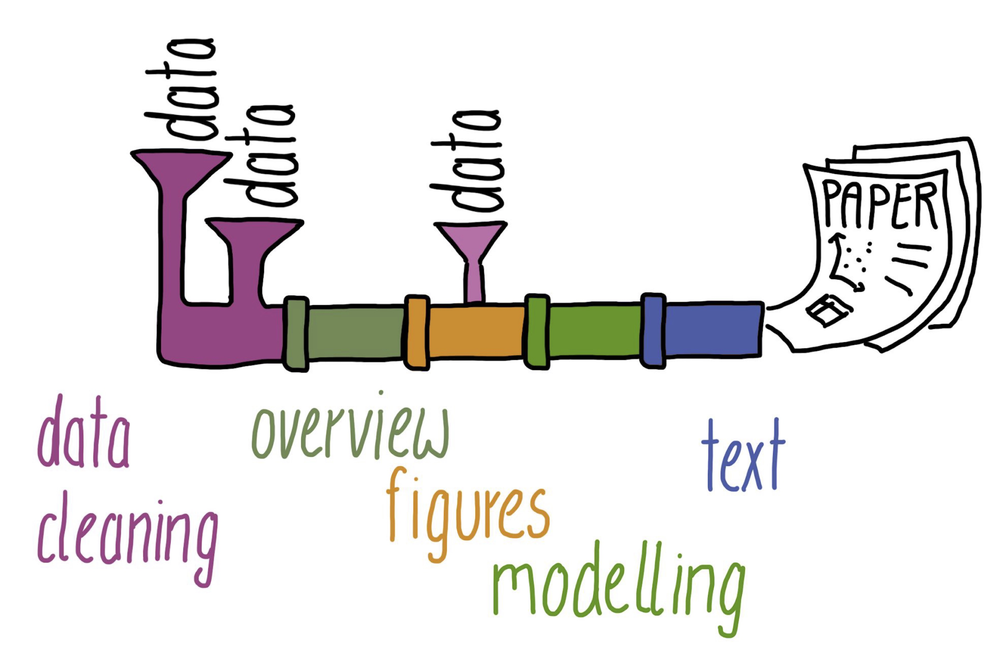
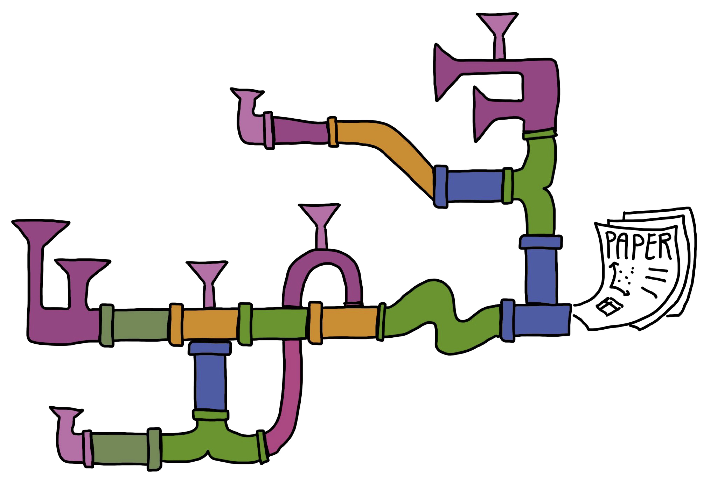
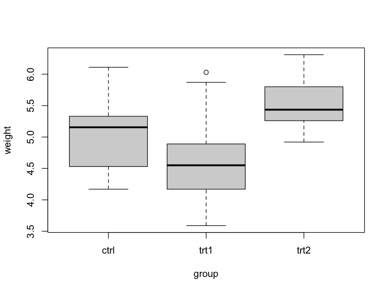

make-example
├── Makefile
├── PlantGrowth_new.csv
├── boxplot_weight-group.png
├── data_clean
│ └── PlantGrowth_new.csv
├── data_raw
│ └── PlantGrowth.csv
├── overview.R
└── preprocess.R
2 directories, 7 files11 Automate your code
Research projects that deal with data and code can be imagined as a pipeline. Data comes in at certain points and then they are processed in several steps. We do some data cleaning, an overview of the data, create figures, do some modelling with the data (simulation, statistics, machine learning, etc.) and in the end we write some text (usually a paper).

Of course, this is a simplified view of what really happens. Most research projects are quite complex and it is really hard to keep track of everything. What data should be used for which analysis? What code should be used for what?

Good organisation and version control help us tremendously to keep track of all the complexity. But what if the pipes of our pipeline would stick together nicely and we would not have to execute everything manually? What if we could automate stuff? Well, we can!
Make for automation
There are many automation tools out there that researchers use for their research pipelines. The probably oldest among them is called Make. It is not only old, but still very functional, useful, and versatile.
A simple example
Let’s say we work on a project and have the following folders and files:
See also here for all files and folders in this example project.
In this project, we want to work with data from an experiment to compare yields (as measured by dried weight of plants) obtained under a control and two different treatment conditions (see also Dobson, A. J., 1983, An Introduction to Statistical Modelling. London: Chapman and Hall).
Here is an example Makefile, that could be used by an R user to create:
- A preprocessed (clean) version of the plant growth data.
- A figure (boxplot) of weight by group. 
Makefile
data_clean/PlantGrowth_new.csv: data_raw/PlantGrowth.csv preprocess.R
Rscript preprocess.R
boxplot_weight-group.png: data_clean/PlantGrowth_new.csv overview.R
Rscript overview.R
all: boxplot_weight-group.pngMakefile structure
How does this Makefile work. A rule in Make consists of three components:
- The target: What do I want to generate?
- The dependencies: What files are needed to generate the target?
- The code: What code needs to run to generate the target from the dependencies?
Schematic Makefile
target: dependency1 dependency2
code to create target from dependenciesThe structure is always the same: 1. The target is before the “:” in line 1. 2. The dependencies are after the “:” in line 1. 3. The code is in line 2 and indented by a tab.
Keeping the structure this way is crucial for the Makefile to run properly.
Running Make
Make runs in the terminal/console. To generate your target, you run:
make targetso for our example that would be
make data_clean/PlantGrowth_new.csvto generate the clean data or
make boxplot_weight-group.pngto generate the boxplot.
You may have noticed that the Makefile for our project also contains a target called all. We use that in longer Makefiles to indicate what needs to be done to create all targets.
In our case, all targets are generated by generating boxplot_weight-group.png, because boxplot_weight-group.png depends on our other target data_clean/PlantGrowth_new.csv and thus Make automatically knows to generate data_clean/PlantGrowth_new.csv (if needed) when running
make allIf needed? Yes. Make only runs the code, if the dependencies of the target have changed since the code was run the last time. This is a particularly useful thing if you have long running computations and want to still ensure that everything gets updated if needed.
Further reading
We just showed a very simple example in this chapter. Make can become much more complex and versatile. Check out the following ressources if you’d like to dive deeper:
- Make, The Turing Way
- Automating data-analysis pipelines, STAT 454 for R users